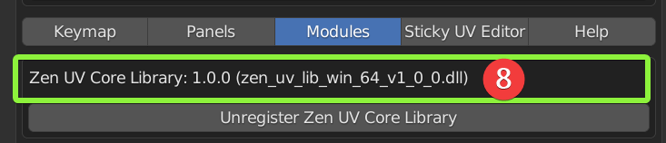
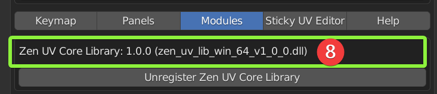
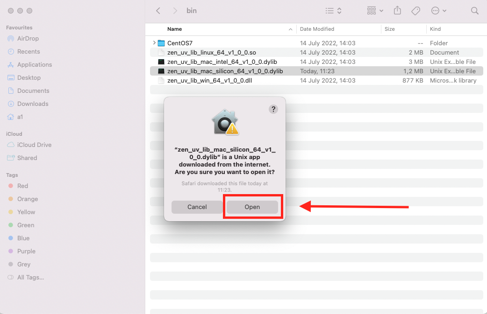
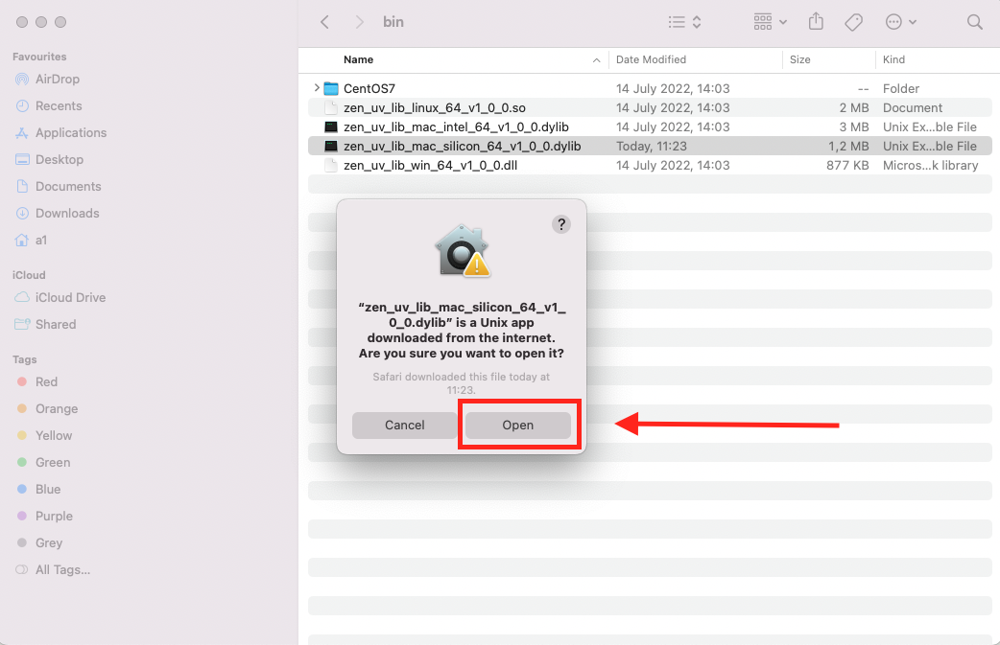
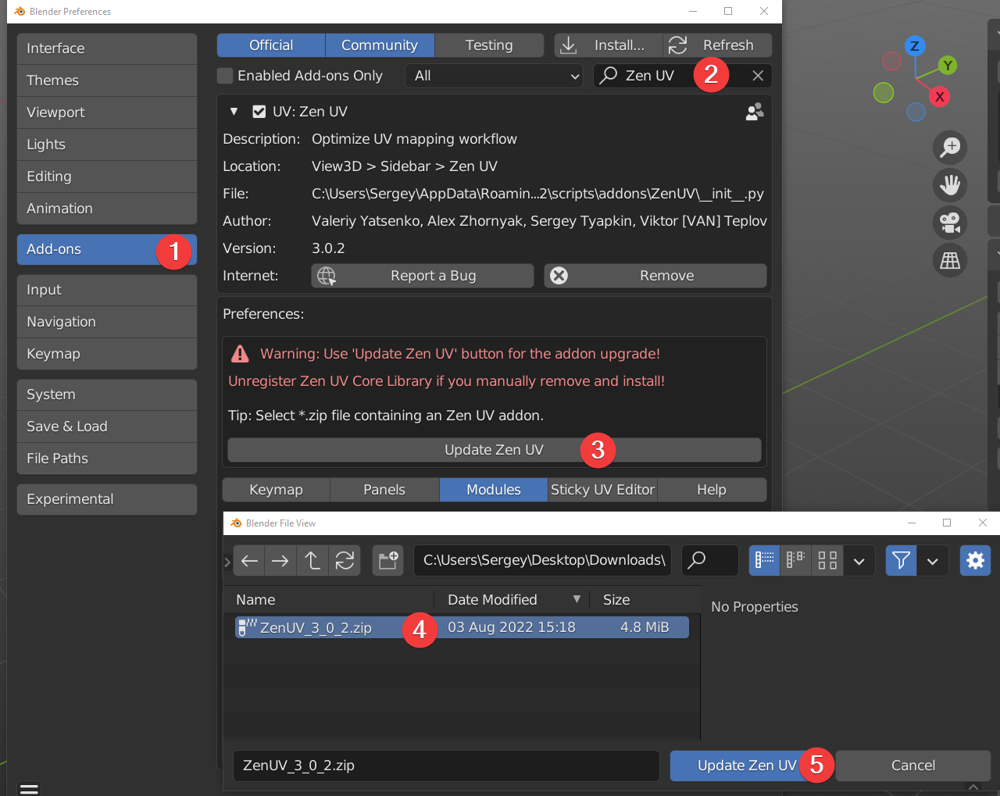

Installation and update
Info
We would like to inform you that the documentation available on this web page pertains exclusively to Zen UV 3. However, we would like to emphasize that Zen UV 4 is now available and offers a significantly improved user experience.
We also remind that Zen UV 3 users can Upgrade Zen UV 3 to Zen UV 4 with a discount!
Installation
- Go to Edit -> Preferences.
- Go to Add-ons.
- Press Install.
- Select Zen UV.zip.
- Press Install Add-on.
- Enable Zen UV add-on using checkbox and restart Blender.
- Done! Let’s go further and install Zen UV Core Library to enable Stack feature!


Zen UV Core Library Installation
Library
Zen UV Core library is an additional library of the Zen UV add-on to get the fastest computations (Stack algorithm) in C++ which is impossible to be implemented in Python. It is distributed separately from the add-on as it is licensed differently from the GPL (Apache License 2.0). Zen UV Core library does not collect or send any data. It does not use any network connections: either internet or local. It is supported on Windows, Mac OS 11 (M1 CPU Universal app only), and Linux platforms.
- Go to Preferences -> Add-ons.
- Find installed and enabled Zen UV add-on.
- Go to Modules.
- Press Download Zen UV Core Library (FREE) if you don’t have it.
- Press Install Zen UV Core Library.
- Select Zen UV Core Library file.
- Press Install Zen UV Core Library.
- Done! Now the add-on is fully installed and you can use all the features!
 

Zen UV Core Library installation for Mac M1-M2 (Silicon App)
Library
The new macOS M1-M2 has increased security checks that necessitates users to perform a security override for Zen UV Core to work. Specifically, Zen UV uses dynamic “zen_uv_core* .dylib” libraries that need to have its security allowed. Therefore, their installation will require additional steps described below.
Certificate
You can make sure that the library is legal and has a valid certificate using this command.
codesign -d --verbose=2 --extract-certificates <path/to/zen_uv_lib_mac_silicon_64_v1_0_0.dylib>
- Go to Preferences -> Add-ons.
- Find installed and enabled Zen UV add-on.
- Go to Modules.
- Press Download Zen UV Core Library (FREE) if you don’t have it.
- Open zen_uv_lib_mac_silicon_64_v1_0_0.dylib library file folowing instruction from Apple or images below.
 
 - Go to Blender and Select zen_uv_lib_mac_silicon_64_v1_0_0.dylib.
- Press Install Zen UV Core Library.

- Press Open in a popup window.

- Done! Now the add-on is fully installed and you can use all the features!
Update
- Go to Preferences -> Add-ons.
- Find installed and enabled Zen UV add-on.
- Press Update Zen UV.
- Select new version Zen UV.zip.
- Press Update Zen UV and restart Blender.
- Install Zen UV Core Library.
- Done!

Manual Update
Manual
Use this update method if for some reason you need to update the add-on using Blender’s standard method. In all other cases, we recommend using Zen UV Update.
- Go to Preferences -> Add-ons.
- Find installed and enabled Zen UV add-on.
- Go to Modules.
- Press Unregister Zen UV Core Libary.
- Press Install.
- Select new version Zen UV.zip.
- Press Install Add-on and restart Blender.
- Install Zen UV Core Library.
- Done!


Still have problems with update?
- Go to Blender add-ons folder. (C:\Users\Sergey\AppData\Roaming\Blender Foundation\Blender\3.2\scripts\addons).
- Delete Zen UV folder manually.
- Install Zen UV add-on.
- Done!